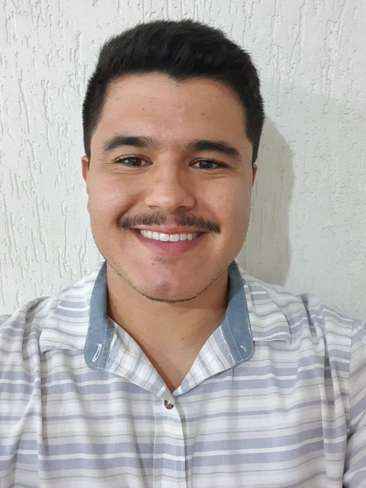

Guilherme Henrique Mota Alfredo
Um pouco sobre mim:
Nascido no dia 13/12/1993, sou natural de Belo Horizonte/MG e estou construindo meu futuro dentro do
mercado da tecnologia. Apesar de ser formado em Direito, sempre tive interesse pela área tecnológica.
Em 2020 tomei a difícil decisão de deixar de trabalhar com o Direito e me tornar um desenvolvedor
web. Atualmente faço parte do grupo de estudantes da Labenu, instituição que abriu as portas para mim e
irá me proporcionar a possibilidade de entrar de vez no mercado dentro de uma área que está crescendo
cada dia mais.
Lista de Habilidades:
- Responsabilidade e Profissionalismo: Por onde passei, sempre fui uma pessoa responsável e encarei
com seriedade meu trabalho. Principalmente porque a área do Direito te obriga sempre a cumprir com
os prazos impostos pelo judiciário
- Sociável: Sou uma pessoa fácil de se relacionar, procuro manter sempre um ótimo ambiente de trabalho
respeitando os outros e tentando resolver qualquer tipo de conflito da melhor maneira.
- Curioso: A curiosidade é uma característica bem marcante na minha pessoa, sou curioso, gosto de
testar e procurar soluções alternativas para determinados problemas.
Histórico acadêmico e profissional:
- Formado na Fundação Torino Escola Internacional - Nova Lima/MG
- Estágio não remunerado na FIAT automóvems - Betim/MG
- Graduado em Direito na PUC Minas
- Estágio voluntário no Tribunal de Justiça de Minas Gerais
- Estágio no escritório de advocacia PLC & Advogados Associados - Belo Horizonte/MG
- Estágio no escritório de advocacia Gonçalves & Advogados Associados - Belo Horizonte/MG
- Atualmente sou estudante da Labenu do curso de Desenvolvedor Web Full Stack